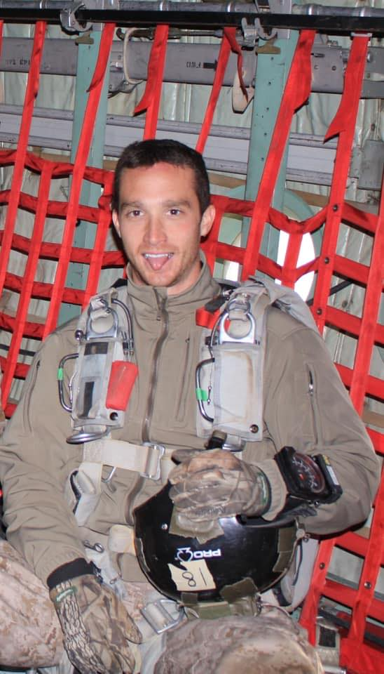
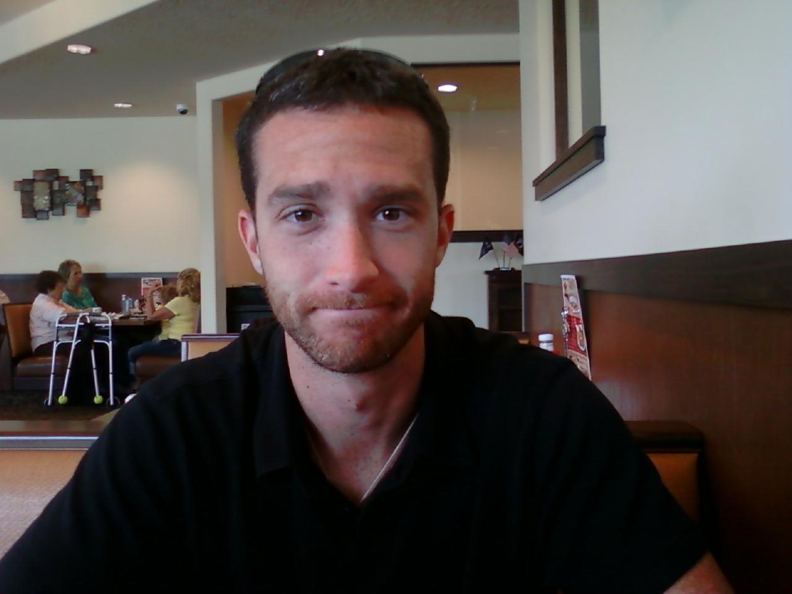
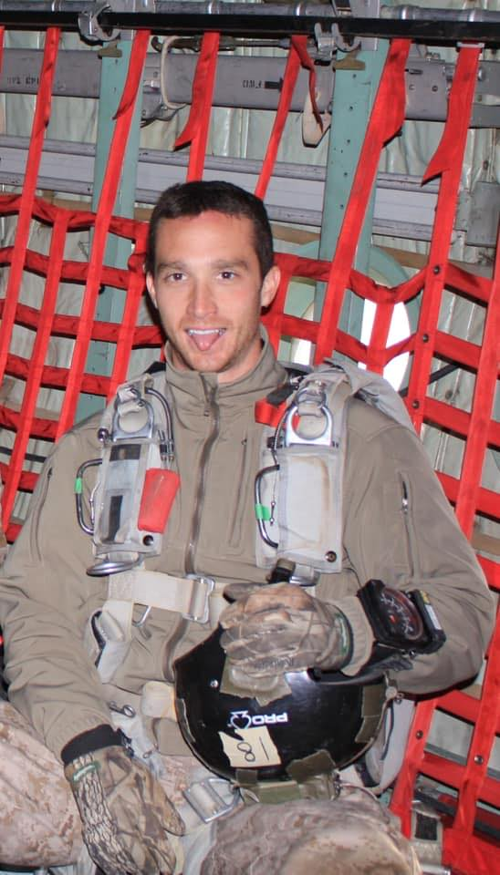
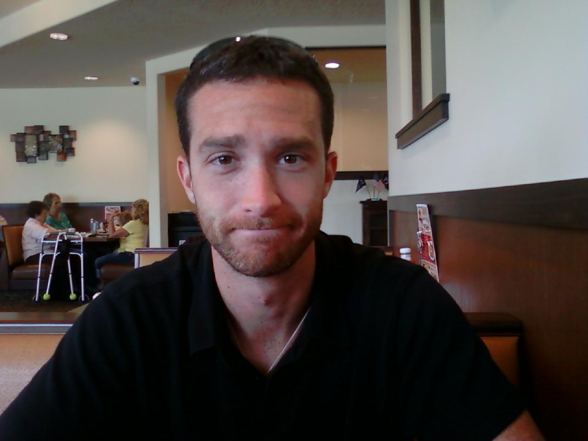
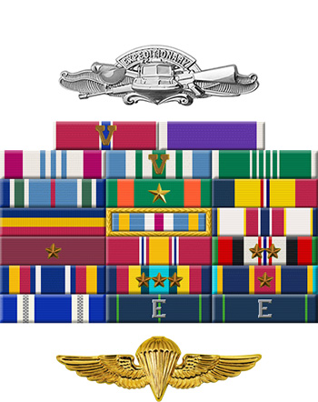

Jared W. Day
Petty Officer 1st Class (IT1 (EXW/FPJ))
US Navy
August 12, 1982 - August 6, 2011
Video Tribute
Biography
From Jared's Parents, Sam and Keno:
Jared was the most amazing and loving son a parent could ask for. we always knew that he
would do something great with his life, because he had a fierce determination and a very strong
will to accomplish whatever task he took on. When he was 6 years old, he started talking about
being a soldier and he never once changed his mind about it. So when he joined the U.S. Navy,
we knew he was going to do many great things. Jared had such a fun sense of humor—he loved
making people laugh. He always made friends easily and he was a true friend. Jared absolutely
loved life. Jared will always be remembered for the special way he had of making people feel
like they mattered. He brought out the best in people. Jared had a very gentle and loving soul.
His teammates have shared stories with us about how Jared could turn a bad situation into a
positive one. That’s how we knew Jared to be. He was kind, compassionate, trustworthy, and
always remained true to himself—and he very much loved his family. Jared would have turned
33 this year, just 6 days after that horrific day. So as you can only imagine, August is a very
difficult month for the three of us, but we will always cherish the memories we have of Jared.
He lived every day of his life to the absolute fullest, and he simply had fun. We want to thank
each and every one of you for your kindness and for your determination in keeping Jared's
memory alive.
From Jared's Sister, Marie:
When I was four years old, I received the best gift a child could ask
for, a sibling. It was only Jared and I, so we were best friends growing up. I refer to Jared often
as "Andy" or "Andy Boy." When we were very young, there was a commercial for Domino’s pizza
with an ugly monkey-looking puppet with huge ears. The slogan for the pizza was "Good pizza,
bad Andy." When the commercial came on, I told Jared he looked exactly like this puppet (which
wasn't even close to looking like him) and it made him cry, and of course he would tattle on me
to Mom and Dad. As a big sister, I certainly took advantage of tormenting my little brother, so
this became his nickname: Andy. As we got older, he tolerated the nickname, and he actually
liked it. I will always remember the dread I felt on September 11, 2001. Not only because of the
horrific events that changed the world that day; but I felt what I can only call a premonition.
Jared was joining the Navy in a matter of months and I felt an incredibly powerful dread that this
day was somehow going to change my family’s lives in the future. When Jared was killed fighting
the very group of people who devastated this country, those feelings from that day came back
to me. I know in my heart that this was Jared's destiny, and I think I always somehow knew that
this would be his calling. This gives me a sense of peace, but there isn't a day that goes by that
my heart hurts for missing him terribly. Jared was always my ally, yet my biggest rival. He was
my confidant, yet the first one to rat me out. He was my protector, and yet my biggest bully. We
gave each other such joy, such grief, and many many laughs to last a lifetime. And I miss every
single one of these moments. In our family, Jared was the joke-telling, always-laughing story
teller. I understand this was also true in his military family. He is simply the funniest person I will
ever meet. It sounds so cliche to say that he enjoyed life... but Jared enjoyed every single
moment of his life. For me, enjoying life sounds ridiculous without having him here, but I know
that Jared would want each one of us to continue on. To have the same passion for life, family,
and loved ones. To keep laughing and always find the humor in life. That is the biggest honor we
can give him. To continue his legacy. I am so blessed for all of you: his military family, who are
now a part of our family. Spending time with you means more to us than we can put into words.
It just makes us feel closer to Jared and that he is still around us. I will be eternally grateful for
everything that each one of you has done for my family. And I am so thankful to know that Jared
was surrounded by such incredible men and women. Thank you for honoring my brother and
best friend today.
Military Service
Jared Day was born on August 12, 1982, in Salt Lake City, Utah. He enlisted in the U.S. Navy on July 1, 2002, and went on active duty to begin basic training on November 25, 2002. Day completed basic training at NTC Great Lakes, Illinois, in February 2003, and then attended Information Systems Technician A School at NTC Great Lakes from February to May 2003. His first assignment was at Naval Computer and Telecommunications Station Keflavik, Iceland, from June 2003 to July 2004, followed by additional training with Fleet Aviation Specialized Operational Training Group Pacific at Naval Air Station North Island, California, in July and August 2004. Petty Officer Day served with the Naval Special Warfare Command at Naval Amphibious Base Coronado, California, from August to November 2004, and then served with Naval Special Warfare Group 3 at NAB Coronado from November 2004 to November 2007. His final assignment was with Naval Special Warfare Development Group at Dam Neck, Virginia, from November 2007 until he was killed in action when the CH-47 Chinook helicopter he was aboard was shot down in Afghanistan on August 6, 2011. Jared Day was buried at Kanosh Cemetery in Kanosh, Utah. On July 24, 2013, Petty Officer First Class Jared W. Day was posthumously awarded the National Intelligence Medal for Valor by the Director of National Intelligence, James R. Clapper.
- Taken from Veteran Tributes
His Joint Service Commendation Medal w/Valor Citation reads:
Petty Officer First Class Jared W. Day, United States Navy, distinguished himself by exceptionally valorous achievement as a Mission Support Site Tactical Communicator for a Joint Task Force in support of Operation ENDURING FREEDOM from 24 February 2010 to 25 June 2010. During this period, Petty Officer First Class Day flawlessly managed tactical and garrison communications for a remote mission support site. On 2 May 2010, his actions under fire were critical in stopping a border checkpoint from being overrun by enemy fighters. After a four kilometer dismounted patrol through mountainous terrain, his element was engaged; by rocked propelled grenades and effective enemy small arms fire. Petty Officer First Class Day spotted and engaged enemy fighters and maneuvered with the ground force Commander while providing situational awareness to higher headquarters to coordinate reinforcements and close air support assets. His efforts ensured the successful execution of the mission and the safe extraction of all ground forces. The distinctive accomplishments of Petty Officer First Class Day reflect great credit upon him, the United States Navy, and the Department of Defense.
Awards & Decorations

• Expeditionary Warfare Specialist
• Freefall Parachutist
• Bronze Star Medal with 'V' device for valor
• Purple Heart
• Defense Meritorious Service Medal
• Joint Service Commendation Medal with Combat ‘V’ device for valor
• Army Commendation Medal
• Joint Service Achievment Medal
• Navy Achievement Medal
• Combat Action Ribbon
• Presidential Unit Citation
• Joint Meritorious Unit Award
• [Additional awards]